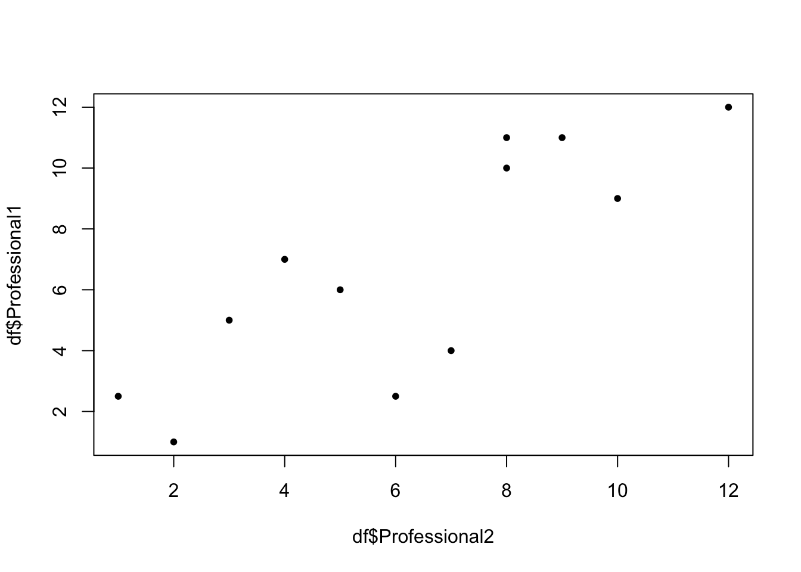
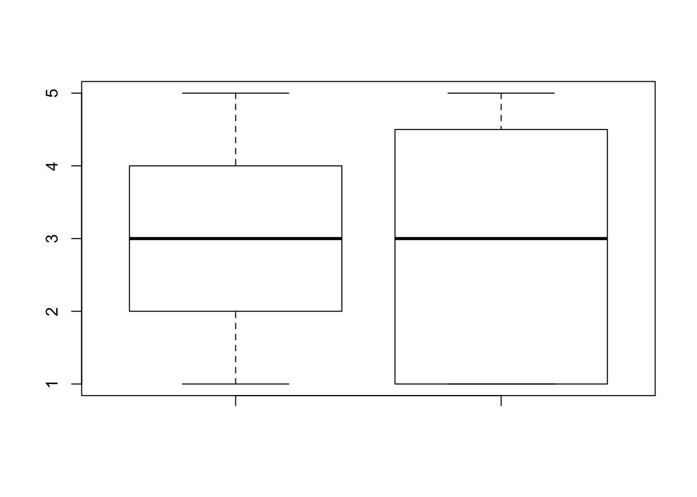

In this class we have learned the following, parametric tests, that is, tests that work when we have data on an interval or ratio scale:
-T-Test
Single Sample
Dependent Samples
Independent Samples
One Factor ANOVA
Between
Within
Two Factor ANOVA
These tests all share something in common in that our results are estimates of a
parameter, and they all are derived from a distribution. Additionally, these tests make assumptions about where the data comes from, i.e. normally distributed, equal
variances etc.
What happens when our data does not meet these criteria? Do we throw our data out? No!
We use non-parametric tests. These tests are distribution-free. Think of these tests
as another version of what we have already learned.
Instead of a Paired t-test, we can use a Wilcoxin Signed Ranks test.
Instead of a Pearson correlation, we can use a Spearman correlation.
Instead of an Independent T-Test, we can use a Mann-Whitney U test.
Instead of a One Way ANOVA, we can use a Kruskal Wallis Test instead.
Instead of a Two Way ANOVA, we can use a Friedman Test.
One of the non-parametric tests that does not have a direct equivalence is the chi square test. For this lab you will only need to know about two.
The Chi Square Goodness of Fit test, and the Chi-Square test for independence.
The Goodness of fit test compares whether observed distribution matches an expected distribution.
Imagine that we go out into a wealthy neighborhood and we count 81 Teslas, 50 Ferrari’s, and 27 Saturn’s.
Are these car makes equally common in this neighborhood?
If these car makes were equally common in wealthy neighborhoods, the proportion of them would be \(\frac{1}{3}\) each.
However, in this wealthy part of town, the breakdown should be:
\(\frac{1}{2} = Tesla\)
\(\frac{1}{3} = Ferrari\)
\(\frac{1}{6} = Saturn\)
Is there a significant difference between the observed frequencies and the expected frequencies?
In R, we can use the chisq.test(x,p) function where x = a numeric vector, and p represents probabilities of the same length as `x.
To see if the car makes are equally common in the neighborhood we would create our data:
#First, we create a vector of our observed frequencies
cars <- c(81,50,27)
#Next, we create a vector of the probabilities assuming the null is true.
p <- c(1/3,1/3,1/3)
#Lastly, we name the function 'res', so we can call it later in more detail. Think of why we label regressions and ANOVA's as 'something.mod'.
res <- chisq.test(cars,p=p)The proper way to report this would be as follows:
\(\chi^2(2) = 27.886, p <.01\)
Now we ask whether or not there is a difference in what we observed and what we expected.
#If the null were true and the proportion of cars were each 1/3, this is what we would have found
res$expected[1] 52.66667 52.66667 52.66667Are these observed frequencies significantly different from the expected frequencies?
#Create vector of our observations
cars <- c(81,50,27)
#Create vector of our expectations
obs <- c(1/2,1/3,1/6)
#Create output of our test
res <- chisq.test(cars,p=obs)
res
Chi-squared test for given probabilities
data: cars
X-squared = 0.20253, df = 2, p-value = 0.9037\(\chi^2(2) p > .05\)
There is not a significant different in our observed frequencies and the expected frequencies.
Similarly, we can use a Chi Square test to see if there is a significant difference in two different groups. For this we will need to make a table.
mat <- matrix(c(100,100,120,24,25,26,34,13,12),nrow = 3,ncol = 3)
rownames(mat) <- c("High","Medium","Low")
colnames(mat) <- c("First","Second","Third")
mat First Second Third
High 100 24 34
Medium 100 25 13
Low 120 26 12chisq.test(mat)
Pearson's Chi-squared test
data: mat
X-squared = 16.025, df = 4, p-value = 0.002986\(\chi^2(4) = 16.025, p <.01\)
Spearman Rho is another way of obtaining a correlation. Let us make a dataframe, plot the variables and calculate a correlation value:
Professional1 <- c(6,5,7,10,2.5,2.5,9,1,11,4,11,12)
Professional2 <- c(5,3,4,8,1,6,10,2,9,7,8,12)
df <- data.frame(Professional1,Professional2)
plot(df$Professional1~df$Professional2,pch=20)
cor.test(x=df$Professional1,y=df$Professional2,method = "spearman")
Spearman's rank correlation rho
data: df$Professional1 and df$Professional2
S = 52.274, p-value = 0.001172
alternative hypothesis: true rho is not equal to 0
sample estimates:
rho
0.8172245 cor(df$Professional1,df$Professional2)[1] 0.8180358rs(12) =.81, p < .05
We can use this test when comparing two dependent groups:
GoodNeighborhood <- c(3, 4, 5, 2, 2, 3, 4, 2, 4, 2, 1, 4)
BadNeighborhood <- c(4, 4, 2, 1, 1, 5, 5, 1, 1, 5, 1, 4)
Neighborhoods <- data.frame(GoodNeighborhood,BadNeighborhood)
boxplot(GoodNeighborhood,BadNeighborhood,data=Neighborhoods)
wilcox.test(GoodNeighborhood,BadNeighborhood,data=Neighborhoods)
Wilcoxon rank sum test with continuity correction
data: GoodNeighborhood and BadNeighborhood
W = 77, p-value = 0.7895
alternative hypothesis: true location shift is not equal to 0\(U_{obt} = 77, NS\)
We can use the Wilcoxin Signed Ranks Test when comparing two dependent groups:
Condition1 <- c(75,66,78,66,25,88,89,60,70,49,88,12)
Condition2 <- c(88,55,78,67,56,85,96,54,97,76,91,13)
twelve_nin <- data.frame(Condition1,Condition2)
twelve_nin Condition1 Condition2
1 75 88
2 66 55
3 78 78
4 66 67
5 25 56
6 88 85
7 89 96
8 60 54
9 70 97
10 49 76
11 88 91
12 12 13wilcox.test(x=twelve_nin$Condition1,twelve_nin$Condition2,paired = TRUE)
Wilcoxon signed rank test with continuity correction
data: twelve_nin$Condition1 and twelve_nin$Condition2
V = 15.5, p-value = 0.1301
alternative hypothesis: true location shift is not equal to 0\(V(12) = 15.5, p >.05\)
We can use the Kruskal Wallis Test when we want to test several independent variables.
Imagine we have the following data:
Food_1 <-c("good","good","good","ok","ok","poor","good")
Food_2 <-c("good","superior","excellent","ok","excellent","excellent","good")
Food_3 <-c("good","superior","excellent","ok","ok","ok","good")
Food_4 <-c("superior","excellent","good","excellent","excellent","superior","superior")
FoodRating <- data.frame(Food_1,Food_2,Food_3,Food_4)
FoodRating Food_1 Food_2 Food_3 Food_4
1 good good good superior
2 good superior superior excellent
3 good excellent excellent good
4 ok ok ok excellent
5 ok excellent ok excellent
6 poor excellent ok superior
7 good good good superiorThe problem with this data is that we cannot directly do an analysis because the data type is character. We can recode this like such:
Food_1 <- c(3,3,3,2,2,1,3)
Food_2 <- c(3,5,4,2,4,4,3)
Food_3 <- c(3,5,4,2,2,2,3)
Food_4 <- c(5,4,3,4,4,5,5)
NFoodRating <- data.frame(Food_1,Food_2,Food_3,Food_4)
NFoodRating Food_1 Food_2 Food_3 Food_4
1 3 3 3 5
2 3 5 5 4
3 3 4 4 3
4 2 2 2 4
5 2 4 2 4
6 1 4 2 5
7 3 3 3 5kruskal.test(NFoodRating)
Kruskal-Wallis rank sum test
data: NFoodRating
Kruskal-Wallis chi-squared = 10.677, df = 3, p-value = 0.01361\(H(4) = 10.677, p <.05\)
We can use a Friedman Test when we want to compare the effect of two or more independent variables on a dependent variable like such:
Remember: This test is designed to replicate the two-way ANOVA, just with different data types, because of this your data needs to look similar.
a <- rep(c("Thing 0","Thing 1","Thing 10","Thing 100"),each=12)
y <- round(runif(48,min=c(11.1,11.2,11.1,11.6),max = c(11.7,11.7,22.6,18)),digits=1)
b <- as.factor(rep(1:12,4))
fried_tst <- data.frame(a,b,y)
fried_tst a b y
1 Thing 0 1 11.3
2 Thing 0 2 11.6
3 Thing 0 3 12.2
4 Thing 0 4 11.8
5 Thing 0 5 11.2
6 Thing 0 6 11.3
7 Thing 0 7 13.1
8 Thing 0 8 15.8
9 Thing 0 9 11.2
10 Thing 0 10 11.3
11 Thing 0 11 18.1
12 Thing 0 12 15.9
13 Thing 1 1 11.1
14 Thing 1 2 11.6
15 Thing 1 3 21.2
16 Thing 1 4 17.4
17 Thing 1 5 11.4
18 Thing 1 6 11.3
19 Thing 1 7 20.6
20 Thing 1 8 17.7
21 Thing 1 9 11.5
22 Thing 1 10 11.7
23 Thing 1 11 18.1
24 Thing 1 12 13.5
25 Thing 10 1 11.2
26 Thing 10 2 11.3
27 Thing 10 3 15.9
28 Thing 10 4 12.1
29 Thing 10 5 11.3
30 Thing 10 6 11.3
31 Thing 10 7 16.4
32 Thing 10 8 13.8
33 Thing 10 9 11.2
34 Thing 10 10 11.3
35 Thing 10 11 18.4
36 Thing 10 12 14.9
37 Thing 100 1 11.3
38 Thing 100 2 11.5
39 Thing 100 3 20.3
40 Thing 100 4 13.6
41 Thing 100 5 11.6
42 Thing 100 6 11.4
43 Thing 100 7 19.1
44 Thing 100 8 13.2
45 Thing 100 9 11.4
46 Thing 100 10 11.6
47 Thing 100 11 15.1
48 Thing 100 12 12.6friedman.test(y~a|b)
Friedman rank sum test
data: y and a and b
Friedman chi-squared = 6.027, df = 3, p-value = 0.1103\(fr_{obt} (3), = 3.2655,N.S\)